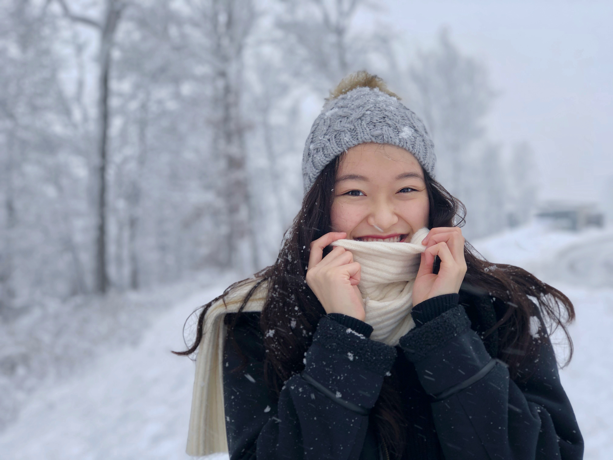
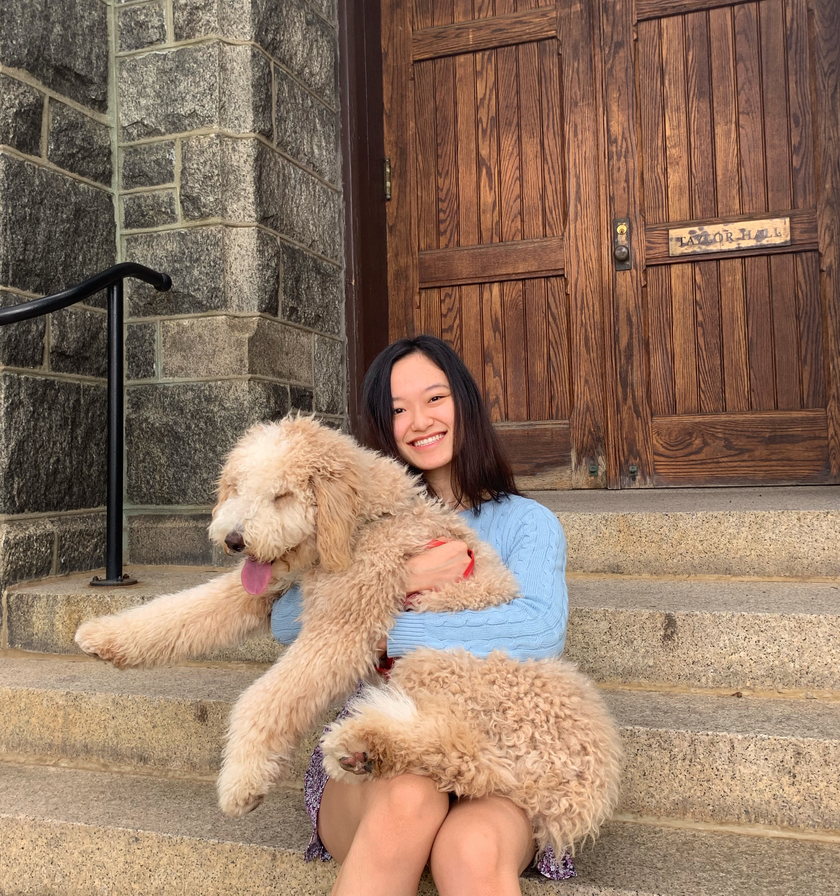
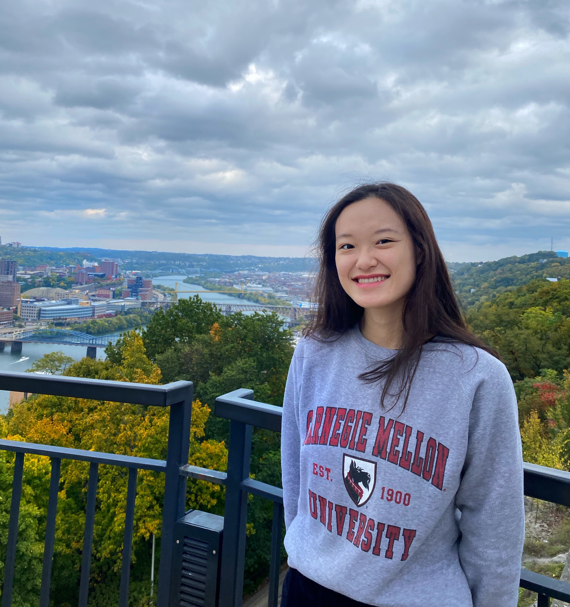
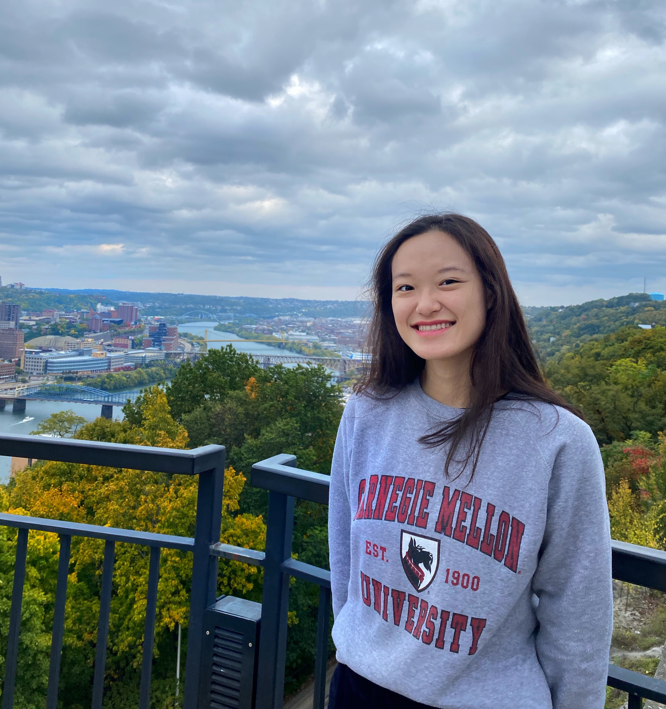

Hi there! I am Nicole, and I'm a sophomore in the Dietrich College at Carnegie Mellon University.
I’ve always found it fascinating how technology shapes and brings changes to our lives.
More specifically, I grew a huge interest in learning how technology and people combine
together to create values and solve problems. Currently, I am pursuing a B.S. in Information
Systems and an intended additional major in Human-Computer Interactions.
Outside of academics, I have a passion for teaching. Since high school, I have been an instructor and content creator at TechGirlz
where I coordinated and taught STEM workshops for middle school girls.
This past summer, I was a teaching assistant for 15-112, Fundamentals of Programming and CS,
which included leading recitations and grading. In my free time, I love to bake and cook with my family,
working out (sometimes with my 6-month-old puppy!), and watching anime/dramas!

 
